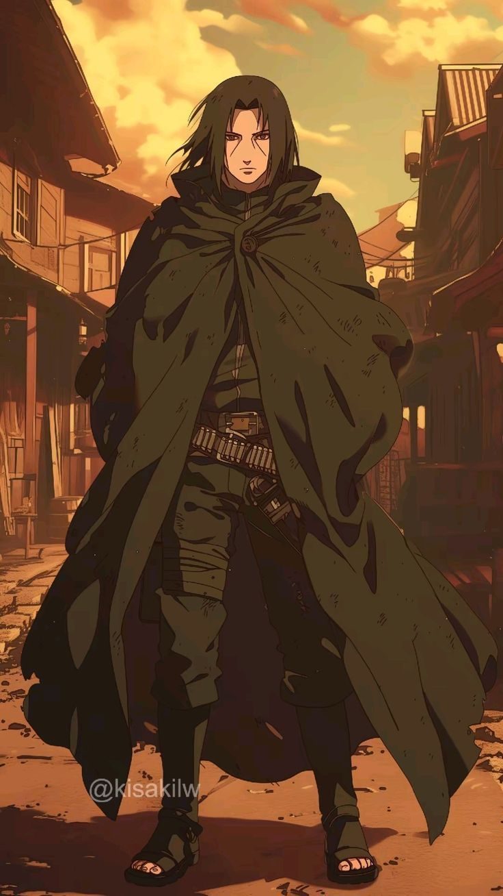

Umashi
“Karasu whispers only to me.”

Kawanokuni knows peace. It has known peace for nearly three centuries. The people prosper, grow, their voices heard and rejoiced. Peace fills the lungs easy, but it burns the mind of those that build it.
Amidst the valleys that surround the many rivers cutting through Kawanokuni, watchful eyes gather. All they see, we know. All they understand, we know. The black birds are known to all, but few know they are us. One, five, a dozen or more, they are our reach. Our fingers to uphold peace with a gentle grasp.
My brothers and sisters of Karasu, we know the burden of peace. We know the whispers that dare to break free from the reverie. Those that want more. Those who find companionship in avarice. Those who find purpose in scheme. Peace is not an easy breath for us.
We are taught as we grow, to know the black birds as they know the land. To hear the whispers that would threaten Kawanokuni. To confirm, for certainty breeds action. Action without certainty leads to chaos. Peace can not live within chaos. When certainty falls, the whispers end and peace continues unchallenged. So, we listen, we watch, we learn.
Kawanokuni knows peace. Karasu whispers. I listen. With the whispers, pain finds me, a cold spine that pierces my heart. Karasu wants more. Karasu walks with avarice. Karasu meets with avarice. Peace will not be an easy breath for me. Though my black birds know the truth, though the whispers surrounding me lay bare Karasu’s impulse to release the grasp of peace, I do not possess the strength to uphold it… but I must.
The black birds guide me, as they always have. In the night, as Karasu sleeps, peace falls again in Kawanokuni. Peace does not come easy for me. Peace comes with blood. With desperation. With violence. Then, with silence.
Kawanokuni knows peace.
Karasu whispers only to me.
Amidst the valleys that cut between realms, cloyed in mist, watchful eyes wander. All they see, I know. All they understand, I know. Karasu is known to few, but I am known to many. The gentle grasp of peace still holds Kawanokuni, my name bathed in bloodshed.
Karasu continues to teach, and I continue to learn. The whispers that threaten Kawanokuni worm to ears far beyond the valleys and quiet homes. Karasu continues to guide, and I continue to uphold peace.
Whispers threaten Karasu. Whispers in a dark land, surrounded by mists, led by a voice ancient. She knows Karasu, Karasu knows her. Karasu warns of her control, how she shapes the ways we walk. How she pushes against Karasu to uphold that paltry semblance of unity.
I hear the whispers she utters. Kawanokuni must know peace. Karasu guides me to silence her.